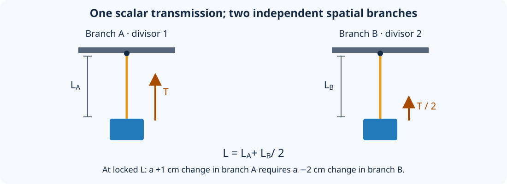

Tendon physics
This chapter describes the model implemented by RaiSim’s tendon solver. Use Tendons for the workflow and Tendon API and model files for parameter names. The continuous equations explain the physical meaning; the discrete equations specify how RaiSim advances that model during a timestep.
Length, velocity, and virtual work
Let \(q\) denote the participating bodies’ configuration, \(v\) their generalized velocities, and \(\ell\) the tendon length. Define the row Jacobian \(J\) by the transmission’s velocity map:
The offset accounts for motion of kinematic attachments and guides that the solver cannot accelerate. For floating and ball-joint configurations, generalized velocity is not simply the time derivative of every stored position parameter; \(J\) is expressed in RaiSim’s generalized-velocity coordinates.
A signed scalar tendon force \(F\) does virtual work \(\delta W=F\,\delta\ell\). Therefore its generalized force is
Here \(T\) is the reported tension. Positive \(T\) pulls toward shorter length, while positive \(F\) acts toward longer length. The actual direction of motion also depends on external forces, inertia, contacts, and constraints. A force sign does not by itself prescribe a velocity.
For a point with world position \(p_i\), define \(g_i=\partial\ell/\partial p_i\). Its force is \(f_i=F g_i\). On a rigid body with center of mass \(c\), this point contributes torque \((p_i-c)\times f_i\). On an articulated body, the point’s kinematic Jacobian maps the same force into joint/base generalized forces. Contributions on the same object or joint are summed before computing the solver response. Internal routes or repeated terms that cancel cannot spuriously accelerate that object.
Straight segments and via-points
A segment from \(a\) to \(b\) contributes
Thus positive tension pulls its endpoints toward one another. A via-point receives the sum of the adjacent segments’ forces. If its object is dynamic, that force and its moment accelerate the object; a world anchor supplies a reaction without adding a dynamic degree of freedom.
Coincident endpoints have zero segment length and use a zero direction to avoid division by zero. A collapsed segment consequently has no defined pulling direction until its points separate. Avoid relying on it to initiate motion.
Sphere and cylinder wrapping
Each wrapping primitive sits between two sites. Its center belongs to a rigid body/link or the world; its radius belongs to the routing model. For an active exterior wrap, the path consists of an incoming tangent segment, a surface arc, and an outgoing tangent segment. The straight route is used when wrapping is inactive.
For a sphere of radius \(r\), let \(\rho_a\) and \(\rho_b\) be the endpoint distances from its center, and let \(\theta\) be the selected surface sweep in the plane through the endpoints and center. The routed length is
For a cylinder, use endpoint distances projected onto the plane perpendicular to its axis. If \(s_\perp\) is the corresponding planar tangent/arc/tangent length and \(\Delta z\) is the endpoint separation along the axis, then
Axial displacement is distributed in proportion to travel along the planar route. The surface portion is a helix; treating it as a flat circular arc would produce incorrect lengths, gradients, and axial forces. The cylinder is infinite: its visual/collision height does not limit the routing surface.
The endpoint force directions follow the tangent segments. Equal and opposite forces are applied at the two tangency points on the guide, including moments about its center of mass. A translating or rotating dynamic guide therefore receives reactions, and a moving kinematic guide transfers motion while keeping its prescribed trajectory. Free dynamic bodies receive balanced internal forces/moments; fixed or driven supports can exchange momentum and energy with the rest of the scene.
Side sites and route selection
With no side site, the direct segment is used when it misses the obstacle; otherwise the valid shorter exterior wrapping route is selected. A side site outside the obstacle selects the side of the wrapping arc. It can retain an overhead-pulley route even when the direct endpoint segment passes below and misses the pulley. The route can release when the direct segment reaches the selected side.
A side site is a routing hint, rather than an additional attachment through which force is transmitted. It can belong to a body or to the world. Its position selects the route, but it receives no point-force contribution merely for serving as a side site.
An interior side site changes the routing mode: the path must intersect the sphere, or the cylinder’s cross-sectional disk. If the direct segment already intersects it, the direct segment is used. Otherwise the route bends through a single point on the near boundary that minimizes the two straight lengths. This does not attach the tendon at the side site’s exact position. For a cylinder, inside/outside is evaluated perpendicular to the cylinder axis.
If an endpoint is on or inside an exterior wrapping surface, the implementation falls back to the unwrapped segment. Wrapping assumes usable exterior endpoints; it is not a penetration-resolution algorithm. Route selection, contact/release, and zero-length segments introduce nonsmooth configurations. Small timesteps and suitable initial placement are especially useful near those transitions.
Pulley branches and mechanical advantage
A pulley element divides the ordered path into independent branches. If branch \(b\) has ordinary routed length \(s_b\) and positive divisor \(d_b\),
The divisor scales both length and force. It does not duplicate a cable, add a wheel, create a spatial point, or join the end of one branch to the start of the next. Each branch starts and ends with sites. The initial divisor is 1; a leading pulley element can replace it. Each subsequent pulley sets the following branch’s divisor directly, rather than multiplying the previous divisor.
{kind=link}

For two branches with divisors 1 and 2, \(\ell=s_A+s_B/2\). If the total length is locked, \(\dot s_B=-2\dot s_A\): the second branch moves twice as far and receives half the tension. At \(T=10\) N, its straight segments carry 5 N. This is a virtual-work transmission ratio. An actual moving pulley with several cable strands can also have force contributions from multiple segments, which add at the pulley body.
Fixed tendons and units
A fixed tendon uses scalar revolute or prismatic joints:
The coefficients may be negative, zero, or repeated. The coordinate may also be negative. Ball, floating, and fixed joints are rejected because they do not provide the supported single revolute/prismatic coordinate. Joints may belong to different articulated systems in the same world.
Choose coefficient units deliberately. If length is measured in metres, a revolute-joint coefficient can represent a signed moment arm in m/rad and a prismatic-joint coefficient a dimensionless ratio. If the coordinate instead represents an angle, its conjugate force is a torque. Mixing joint types with arbitrary unitless coefficients does not automatically create a physical length.
For the metre/Newton convention, parameters have these units:
Quantity |
Unit |
|---|---|
Lengths, margin, drawing radius |
m |
Force, tension, friction threshold, actuator bounds |
N |
Spring stiffness and position gain |
N/m |
Damping and velocity gain |
N s/m |
Armature |
kg |
Limit/coupling compliance and friction regularization |
m/N, used in the discrete equations below |
Activation time |
s |
Position correction, pulley divisor, RGBA |
Dimensionless |
For a general transmission coordinate \(\ell\), force has units of energy per unit \(\ell\), stiffness has force/length units, and armature has force-time-squared/length units. The drawing radius always remains a spatial radius in metres, including when the physical transmission has other units.
Spring, slack interval, and damping
Let \([\ell_s^-,\ell_s^+]\) be the spring interval and define
Equal endpoints define an ordinary rest length. Unequal endpoints define a
zero-spring-force interval: below it the spring pushes toward larger length;
above it the spring pulls toward smaller length. [0, L] produces a pull-only
spring for a spatial path. Damping remains active inside the spring interval.
The spring and damping share an implicit solver row. With timestep \(h\), current error \(e_n\), and the solved end-step length velocity \(\dot\ell_+\), the passive impulse satisfies
Here \(k_a=k\) outside the interval, or for equal spring endpoints, and \(k_a=0\) inside an unequal-endpoint interval. The active region and the geometry Jacobian are evaluated at the start of the step. Crossing a slack boundary within that step is not a continuous event solve.
The extra \(h k_a\) term comes from evaluating spring extension using the linearized end-step length \(\ell_n+h\dot\ell_+\). This prevents the explicit spring-force instability at high stiffness, while introducing the numerical damping and approximation associated with implicit integration. Stability alone does not establish timestep-independent accuracy.
For the introductory 1 kg suspended load, the static balance above the spring interval is \(k(\ell-1)+2=9.81\) N. With \(k=500\) N/m, the equilibrium length is 1.01562 m. The actuator supplies 2 N of tension, while the total tension balances the load’s weight. The independent 1.5 m upper constraint is inactive.
Actuator and activation dynamics
Let \(u\) be Drive::force, \(a\) the filtered feedforward force,
\(k_p,k_v\) the position and velocity gains, and
\(\ell_d,\dot\ell_d\) the targets. The intended force law is
For activation time \(\tau>0\), the feedforward state advances by the exact first-order update for a command held constant over one timestep:
A newly created tendon starts with zero activation. With zero activation time, \(a_{n+1}=u\). Only feedforward force is filtered: targets, gains, passive forces, and constraint forces are not passed through this activation filter. This scalar filter does not constitute a muscle force-length/force-velocity or biochemical activation model.
Position/velocity feedback is implicit. The discrete actuator relation is
Its impulse is \(hF_{\mathrm{drive},+}\). The bounds apply to the combined feedforward and servo force of this tendon, after activation and feedback. They exclude springs, damping, friction, armature, length limits, and coupling reactions. Bounds may exclude zero; in that case a zero command can still produce the nearest allowed nonzero actuator force.
Armature and route curvature
Armature \(a_t\geq0\) stores kinetic energy
For an unconstrained, autonomous transmission it contributes the generalized mass term \(a_tJ^TJ\) and the curvature force term \(-a_tJ^T\dot Jv\). It adds inertia along the transmission rather than equally in every spatial direction. Several tendons contribute their own coupled transmission inertia through their solver rows.
For a spatial tendon with moving endpoints or guides, let \(b_\ell\) denote the length acceleration caused by kinematics with generalized acceleration held zero, including changes of direction. The armature row uses
RaiSim estimates this bias with a centered second difference of routed length, using endpoint and guide-axis kinematics. Fixed tendons have constant scalar joint coefficients and use zero curvature bias.
For a 1 kg body on a straight radial transmission with armature 3 kg, an 8 N radial force initially produces 2 m/s² radial acceleration. If the body instead has transverse velocity 2 m/s at radius 1 m, the length curvature is \(v_\perp^2/\ell=4\) m/s². With no applied radial force, the armature term produces radial acceleration \(-3\) m/s². Omitting curvature would miss this reaction even though the instantaneous length velocity is zero.
Length bounds, margin, and compliance
Lower and upper bounds are separate unilateral rows. A lower row can only exert positive force; an upper row can only exert negative force. They can act predictively before a bound is crossed, limiting the end-step closing velocity. They do not directly clamp the stored configuration to a target length.
With margin \(m\), define the signed gaps
Let \(\eta(g)=\beta\) for \(g<0\) and 1 otherwise, where
\(\beta\) is positionCorrection. The row targets and impulse bounds are
Positive margin moves the effective boundaries inward to \(\ell_{\min}+m\) and \(\ell_{\max}-m\); it is not merely a reporting threshold. Choose a margin compatible with the permitted interval. Overlapping effective boundaries create conflicting requirements.
Equal finite bounds create one bilateral lock with target \(b=\beta(\ell_{\mathrm{target}}-\ell)/h\) and unbounded signed impulse. Margin is ignored for this equality case. The default correction fraction is 0.2: in an isolated linear hard equality, that targets removal of 20% of existing position error in one step. Zero correction prevents correction of existing violation; 1 targets full linearized correction. Strong correction can inject energy and cause abrupt transients.
For compliance \(c\), row softness is \(\gamma=c/h^2\). Zero compliance selects a hard velocity constraint, subject to solver convergence and geometric linearization. Positive compliance allows residual constraint error under load. For a bilateral row with error \(C\), the converged relation is
This makes the parameter interaction explicit. At static equilibrium with
\(\beta>0\), \(F=-\beta C/c\); therefore numerical compliance and position
correction together determine the apparent static stiffness. Use the spring
stiffness parameter for a directly specified elastic force law, and use the
constraint equation when calibrating a compliant lock or limit.
Dry friction and stiction
Dry friction targets zero length velocity with
Here \(F_f\) is frictionLoss and \(c_f\) is
frictionCompliance. With zero compliance, a subthreshold disturbance can be
balanced by an interior impulse while the transmission remains at rest. During
sliding the impulse saturates at the threshold and opposes motion. It can bring
a sufficiently small velocity to zero without reversing it simply because a
fixed friction force overshot the stop.
Positive friction compliance regularizes this condition. In an unsaturated row, \(\dot\ell_+=-c_fF/h\), so nonzero balancing force permits creep. It should not be interpreted as exact stiction with the same threshold. Unlike viscous damping, dry friction can produce a finite opposing force at zero velocity.
Polynomial tendon couplings
Let the captured references be \(\ell_{1,0},\ell_{2,0}\) and define
Coefficient \(c_i\) has units of the first length coordinate divided by the second coordinate to power \(i\); the constant term has first-length units. Choose coefficients accordingly when coupling different kinds of transmission coordinates.
The coupling row has Jacobian and force distribution
The derivative controls both velocity ratio and force transmission. Using the
polynomial value as a force coefficient would violate virtual work. For
{0, 2, 0.1, 0, 0}, the relation is \(\Delta\ell_1=2x+0.1x^2\) and the
instantaneous ratio is \(2+0.2x\).
TendonCoupling::getForce() returns \(\lambda\). Each tendon’s total force
includes its respective contribution above. Coupling compliance uses
\(\gamma=c/h^2\), target velocity is \(-\beta C/h\), and the impulse is
bilateral. The polynomial and derivative are evaluated once for the step; a
nonlinear equality is enforced through this local linearization and subsequent
position correction, rather than an exact nonlinear position projection.
Passing a null second tendon constrains the first to \(\ell_{1,0}+c_0\); higher coefficients then have no effect. Disabling the coupling or either participating tendon removes the row. The first and second tendons must be distinct and belong to the same world.
Energy interpretation
The spring potential and armature kinetic energies above are the quantities returned by the tendon energy getters. They exclude body energy, actuator work, and any energy associated with compliant limit/coupling/friction rows. Passive damping and ideal sliding friction dissipate energy. Drives and moving kinematic supports can supply it. Constraint position correction and finite-step implicit integration can also change mechanical energy numerically. Use a whole-system energy/work balance when diagnosing a mechanism; summing only the tendon energy getters is not a conservation test for the complete world.